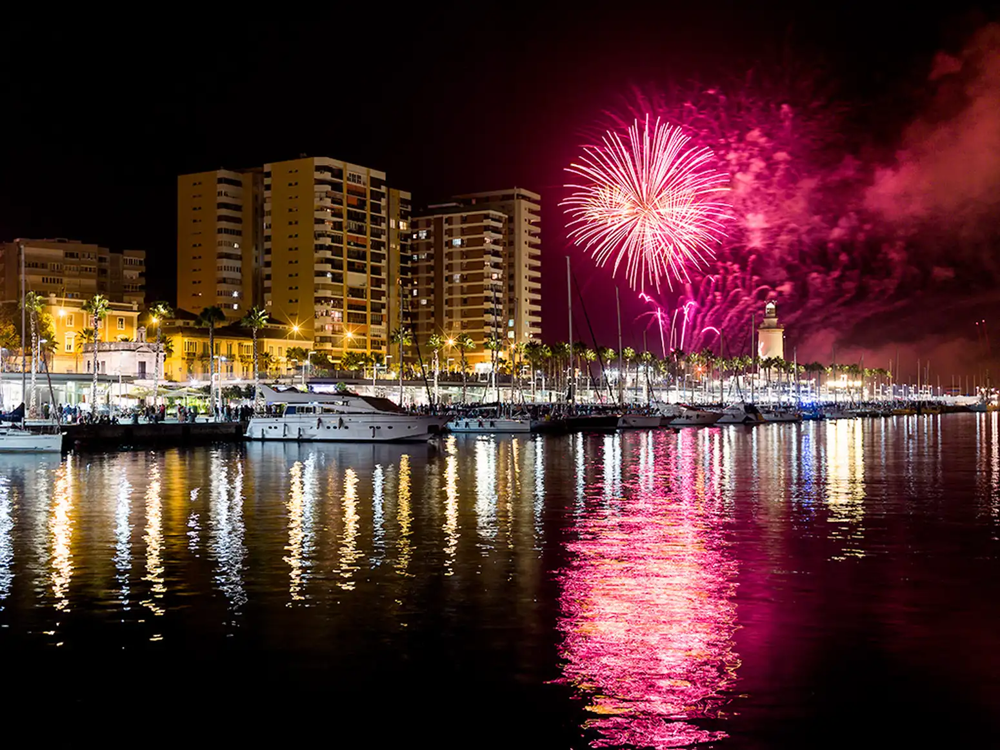
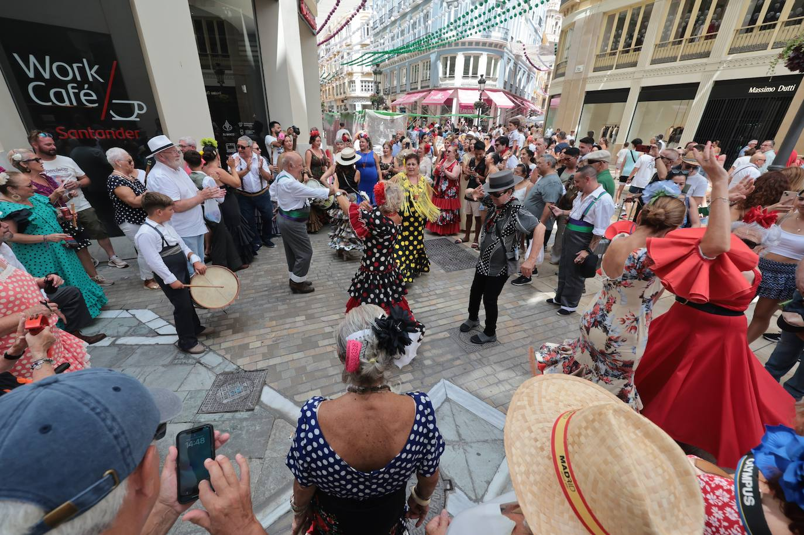

La Feria de Málaga tiene su origen en 1487, cuando la ciudad fue recuperada por los Reyes Católicos tras la conquista de la ciudad. Se celebró por primera vez como una festividad religiosa y de acción de gracias por la reconquista, con una serie de actos religiosos y festivos en honor a la Virgen de la Victoria, patrona de la ciudad. Con el tiempo, la feria fue evolucionando, y a finales del siglo XIX comenzó a adquirir un carácter más festivo y popular. En sus primeras ediciones, la feria se celebraba en la Plaza de la Constitución, pero a medida que la ciudad crecía, la festividad se expandió a otras zonas, consolidándose como uno de los eventos más importantes de Málaga. Hoy en día, la Feria de Málaga se celebra a mediados de agosto, marcando el punto culminante de las fiestas veraniegas en la ciudad. La feria es conocida por su ambiente alegre y festivo, con música, bailes, y especialmente el rebujito, un cóctel tradicional de la zona. Las casetas, el flamenco y los desfiles de carrozas, junto con las tradicionales ferias de día y de noche, son los principales atractivos de este evento, que atrae a miles de malagueños y turistas cada año. La Feria de Málaga es un escaparate de la cultura andaluza, donde la música y la gastronomía juegan un papel crucial, y donde se celebra con entusiasmo la historia y las tradiciones de la ciudad.
Una de las entradas más emblemáticas, decorada con miles de bombillas, que marca el inicio de la feria.
El pescado a la brasa, especialmente las sardinas, es uno de los platos más característicos de la feria.
En el centro de la ciudad, la fiesta se traslada a las terrazas y bares, con música, baile y diversión.
La famosa calle de Málaga, iluminada de manera espectacular, es el centro de la celebración.
Las bandas de música y las rumbas suenan por toda la feria, creando un ambiente festivo único.
Unos tradicionales asientos elevados que se colocan en las casetas para disfrutar mejor de las vistas y el ambiente.
|  |
La Feria de Málaga, celebrada cada agosto, es uno de los eventos más emblemáticos de la ciudad, ofreciendo actividades que combinan la tradición andaluza con la diversión para todas las edades. Entre las actividades más destacadas se encuentra la Muestra de Caballos y Carruajes, donde los jinetes, con sus elegantes trajes, recorren el centro de Málaga a bordo de caballos engalanados, creando un espectáculo de color y elegancia. El Alumbrado de la Feria es otro de los grandes momentos, cuando el centro histórico de la ciudad se ilumina con miles de luces, marcando el inicio de las festividades con una atmósfera única. Además, la Feria Infantil ofrece un espacio lleno de atracciones y juegos para los más pequeños, garantizando su disfrute en un ambiente seguro y festivo. |
|
Uno de los momentos más esperados por los malagueños es la Cruz de los Molletes, una tradición que consiste en una representación en la que se preparan molletes (panecillos típicos malagueños) con aceite de oliva y jamón, una delicia que se comparte entre amigos y familiares. También, la Procesión del Patrón recorre las principales calles de la ciudad, con la imagen de la Virgen de la Victoria, la patrona de Málaga, siendo portada por los malagueños con devoción y entusiasmo. Para cerrar cada jornada, los Fuegos Artificiales sobre el puerto de Málaga deslumbran el cielo nocturno, un espectáculo que deja una huella imborrable en todos los asistentes, cerrando con broche de oro la fiesta. |
 |